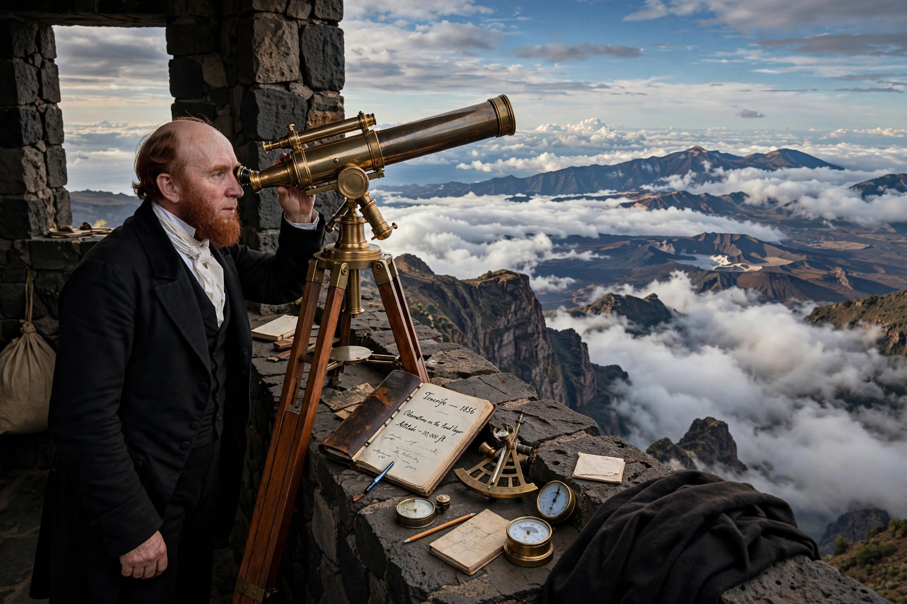

Charles Piazzi Smyth
Charles Piazzi Smyth (3 January 1819 – 21 February 1900) was a British astronomer who was Astronomer Royal for Scotland from 1846 to 1888. He is known for pioneering high-altitude observing in Tenerife and for his (now considered fringe) pyramidological writings on the Great Pyramid of Giza, which he believed encoded divine measurements.

| Charles Piazzi Smyth | |
|---|---|
| Born | 3 January 1819, Naples, Italy |
| Died | 21 February 1900 (aged 81), Ripon, England |
| Known for | Astronomer Royal for Scotland; high-altitude astronomy; pyramidology |
| Institutions | Royal Observatory, Edinburgh; University of Edinburgh |
Career
The son of astronomer William Henry Smyth, Piazzi Smyth — named for Giuseppe Piazzi, discoverer of Ceres — worked at the Royal Observatory at the Cape of Good Hope before being appointed, aged 26, as Astronomer Royal for Scotland and professor of astronomy at Edinburgh. In 1856 he led a celebrated expedition to Tenerife, funded by the Admiralty, where he demonstrated with measurements from Mount Guajara and Alta Vista how much atmospheric seeing improves at altitude — an insight that underlies the siting of modern observatories. He was also an accomplished spectroscopist and meteorological observer, producing early work on the solar spectrum and on the aurora.
Pyramidology
In 1864 Piazzi Smyth published Our Inheritance in the Great Pyramid, arguing that the Great Pyramid of Giza had been built under divine guidance and that its dimensions encoded a sacred unit he called the "pyramid inch". He travelled to Egypt to survey the pyramid with great precision; his measurements were excellent even where his conclusions were not. The theories were embraced by religious writers but rejected by Egyptologists and much of the scientific establishment, leading to his resignation from the Royal Society in 1874. His careful survey data nonetheless remained valuable to later scholars such as Flinders Petrie.